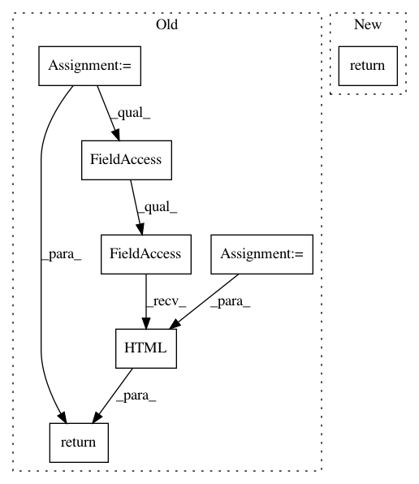

a0c0f4d3200f31be58caac1a803bcc85622221db,datalab/stackdriver/commands/_monitoring.py,,_list_resource_descriptors,#Any#Any#,70
Before Change
for resource in gcm._utils.list_resource_descriptors(project_id)
if fnmatch.fnmatch(resource.type, pattern)
]
return IPython.core.display.HTML(
datalab.utils.commands.HtmlBuilder.render_table(data))
def _list_metric_descriptors(args, _):
Lists the metric descriptors in the project.
After Change
Lists the resource descriptors in the project.
project_id = args["project"]
pattern = args["type"] or "*"
return gcm.ResourceDescriptors(project_id=project_id).table(pattern=pattern)
In pattern: SUPERPATTERN
Frequency: 3
Non-data size: 7
Instances
Project Name: googledatalab/pydatalab
Commit Name: a0c0f4d3200f31be58caac1a803bcc85622221db
Time: 2016-08-18
Author: supriyagarg@google.com
File Name: datalab/stackdriver/commands/_monitoring.py
Class Name:
Method Name: _list_resource_descriptors
Project Name: googledatalab/pydatalab
Commit Name: de91b65a4c301bc3a877597c5d44c9179ab16922
Time: 2016-10-27
Author: yebrahim@users.noreply.github.com
File Name: datalab/utils/commands/_extension.py
Class Name:
Method Name: _extension
Project Name: googledatalab/pydatalab
Commit Name: a0c0f4d3200f31be58caac1a803bcc85622221db
Time: 2016-08-18
Author: supriyagarg@google.com
File Name: datalab/stackdriver/commands/_monitoring.py
Class Name:
Method Name: _list_metric_descriptors